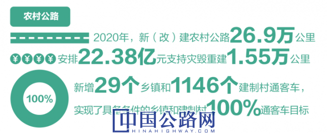

微官网
微官网
2021-01-01 中国高速公路网—21世纪公路网 作者：整理/《中国公路》编辑部 赵晓夏 张波 谢博识 杨燕 制图/苗挺节
编者按
当世界百年未有之大变局叠加新冠肺炎疫情冲击，行业之变在时代大词汇频繁翻牌的过程中闪现：“双循环”新发展格局、新基建、一张网、农村公路“两通”、综合执法改革、去行政化、资产整合……2020年就是在这样的变化中走来又走去，世界变化正在加速，时代进程正在加速，行业变革正在加速。《中国公路》杂志社盘点了行业发展重点领域的全国性进程，作为2021新年巨献，以期在巨变中寻求规律和趋势。同时，也以此为行业奉上一份跨年礼物，祝福行业在新的一年牛气冲天！
在向第二个百年奋斗目标迈进的历史关口，巩固和拓展脱贫攻坚成果、全面推进乡村振兴、加快农业农村现代化，是需要全党高度重视的一个关系大局的重大问题。农村公路作为服务全面建成小康社会、推进农业现代化、让人民共享改革发展成果的重要载体，在助力乡村振兴，决战脱贫攻坚中发挥了重要的作用。
2020年，交通扶贫成效显著，“两通”目标基本完成，新增29个乡镇和1146个建制村通客车，基本实现了具备条件的乡镇和建制村100%通客车目标。全国全年新改建农村公路26.9万公里，安排22.38亿元支持1.55万公里农村公路灾毁重建。

“十三五”期间，“四好农村路”建设深入推进，全国新改建农村公路超过140万公里，新增通客车建制村超过3.35万个，革命老区、民族地区、边疆地区、贫困地区通达深度进一步提高，交通运输行业兑现了“小康路上决不让任何一个地方因交通而掉队”的庄严承诺。
进入“十四五”，我国各地将进一步提升农村公路发展水平，推动更多向进村入户倾斜。有序实施农村公路联网路建设，强化农村公路与干线公路、村内道路衔接。加快农村公路提档升级，严格落实农村交通安全设施与公路建设主体工程“三同时”制度。支持国家乡村振兴重点帮扶县发展，加快实现从“输血”到“造血”的转变。在小型交通基础设施建设领域积极推广以工代赈，进一步开发“四好农村路”各类公益性岗位。健全完善“四好农村路”高质量发展体系，扎实推进农村公路管理养护体制改革试点，建立农村公路绩效管理考核机制，全面推行县、乡、村三级“路长制”。